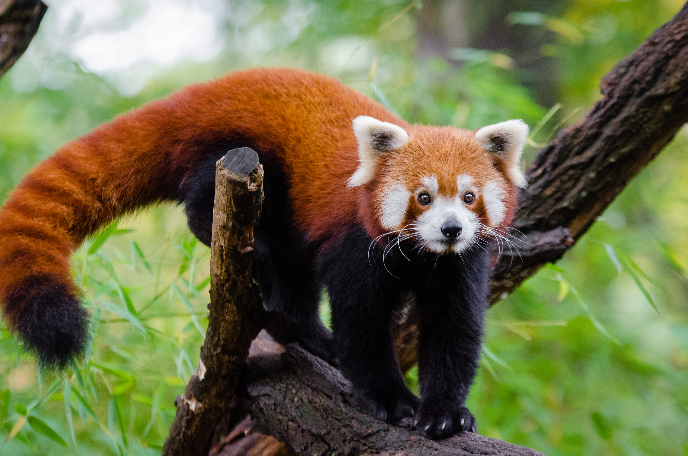

The red panda is slightly larger than a domestic cat with a bear-like body and thick russet fur. The belly and limbs are black, and there are white markings on the side of the head and above its small eyes. Red pandas are very skillful and acrobatic animals that predominantly stay in trees. Almost 50% of the red panda’s habitat is in the Eastern Himalayas. Primarily an herbivore, the name panda is said to come from the Nepali word ‘ponya,’ which means bamboo or plant eating animal.
Red pandas are endangered and are legally protected in India, Bhutan, China, Nepal and Myanmar. Their primary threats are habitat loss and degradation, human interference and poaching. Researchers believe that the total population of red pandas has declined by 40 percent over the past two decades.
Page 2 ->